📤 Exporting Data
Export any WordPress content type, custom fields, or raw database table to CSV or JSON — with powerful filters and field selection.
Supported Export Types
- Posts, Pages, and any Custom Post Type
- Taxonomies and Terms
- Users and User Meta
- Comments
- Navigation Menus
- Raw MySQL Tables
- WooCommerce Products, Orders, Coupons, Attributes
Output Formats
- CSV — Compatible with Excel, Google Sheets, and other import tools
- JSON — Suitable for developer workflows and API integrations
Export Workflow
Step 1 — Open the Export Screen
Navigate to Import Export → Export in the WordPress admin sidebar.
1. Select Content Type
Choose the type of content you want to export from the available options — for example, Posts, Pages, Users, WooCommerce Products, or a raw MySQL Table.
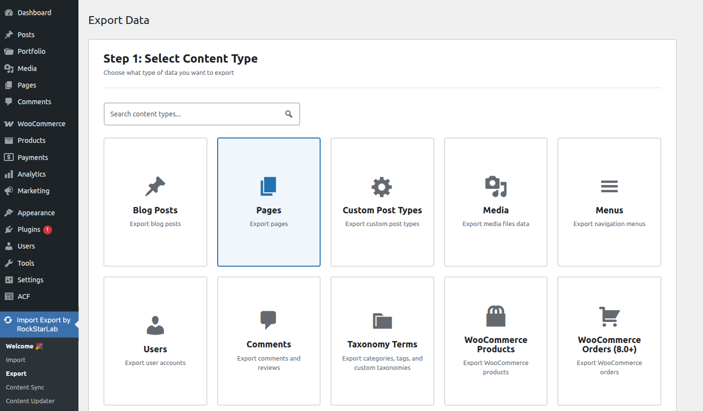
2. Proceed to the Next Step
Once a content type is selected, click the Next Step button to continue configuring the export.
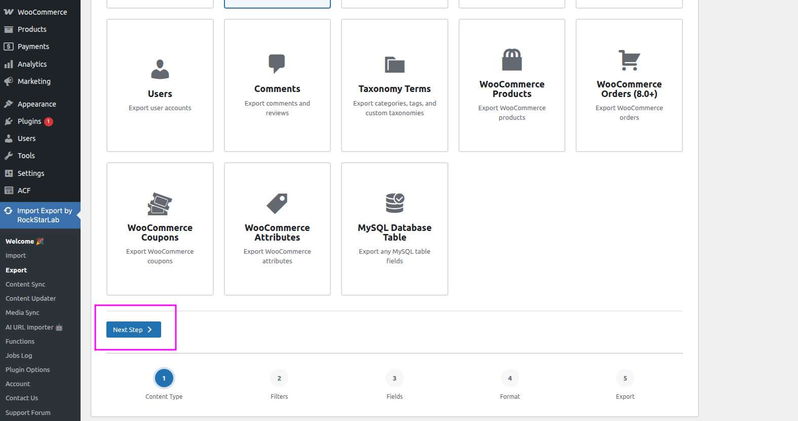
Step 2 — Filter Export Data
On the next screen you can optionally narrow down which records get exported by adding filters. If no filters are added, all content of the selected type will be exported.
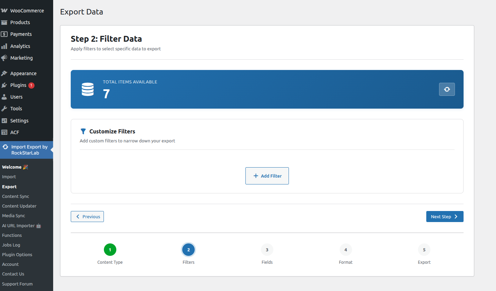
Filters let you export only the records that match specific criteria — for example, only posts with a Publish status, or only records created within a certain date range. You can add an unlimited number of filters to fine-tune your export.
Adding a Filter
Click the Add Filter button to add a new filter row.
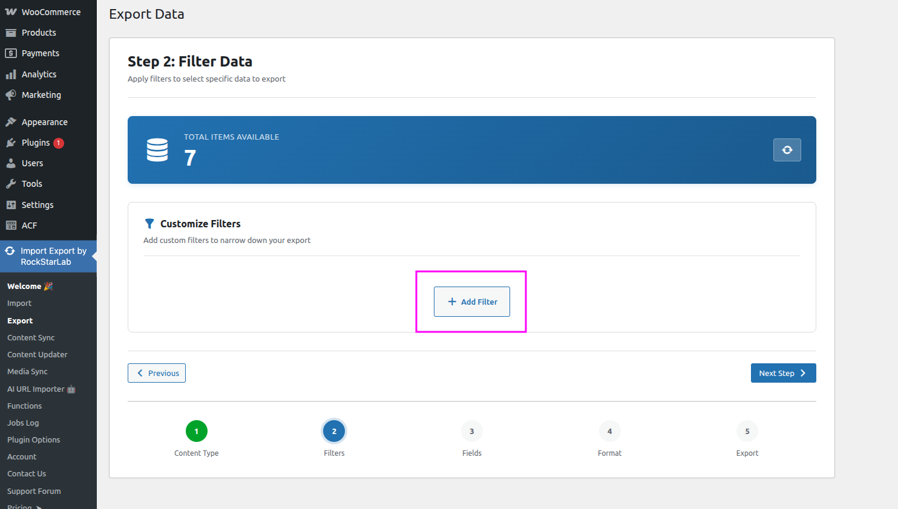
For each filter, select the field you want to filter by and the condition it must meet (e.g., equals, contains, greater than, etc.).
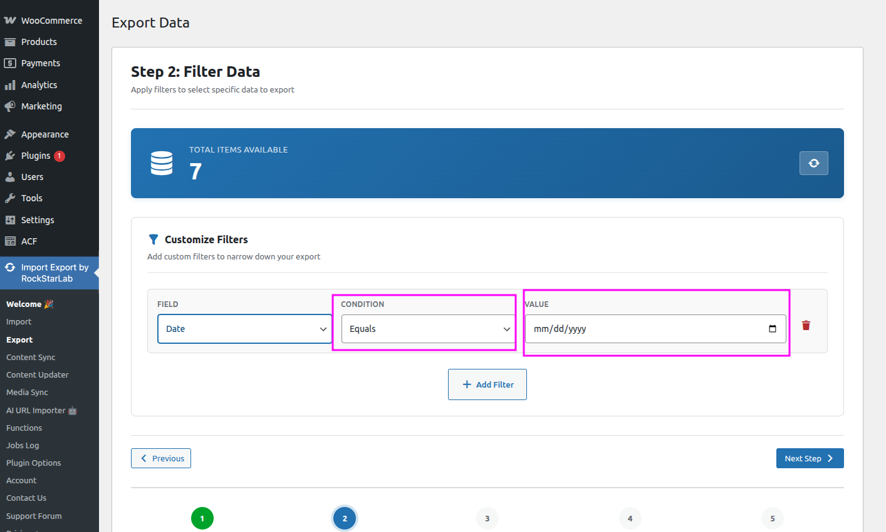
Once all filters are configured, click the Next Step button to continue.
Step 3 — Configure Export Fields
In this step you choose exactly which fields will be included in the exported file and how they are structured.
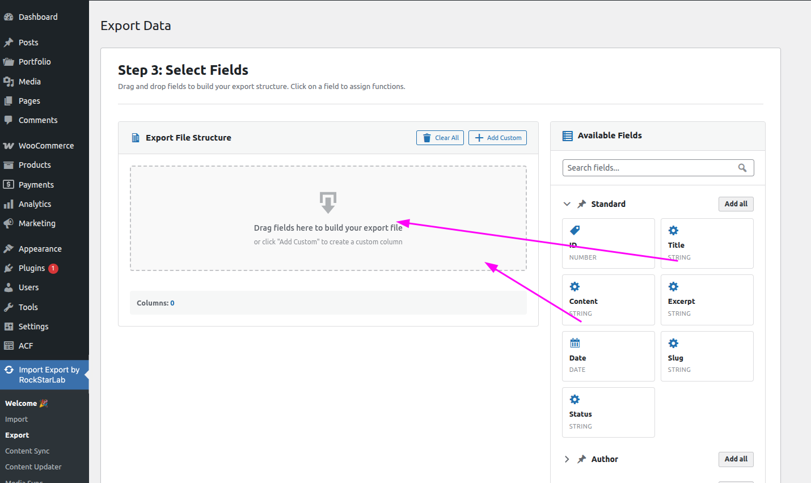
Building the Export File Structure
Drag the fields you need from the right-hand sidebar — which lists all available WordPress fields — into the Export File Structure area. You can reorder the columns at any time by dragging them into the desired position.
Adding a Custom Column
If you need to include data that is not directly tied to a WordPress field, you can add a custom column with any arbitrary value.
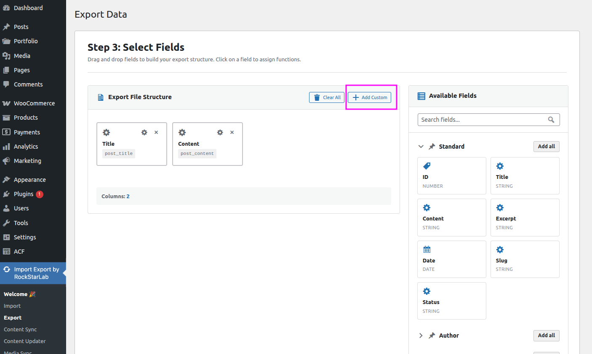
Assigning Functions to Fields
You can transform the exported content for any field by assigning one or more functions to it. This is useful for formatting values, converting units, or applying any custom transformation during export.
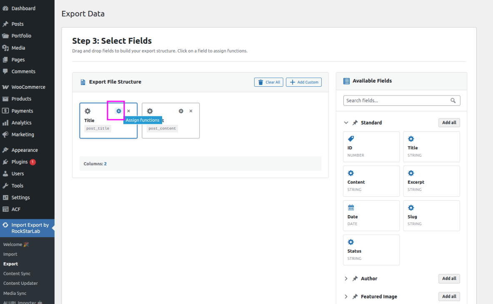
Click the gear icon ⚙ on any field in the export structure to open the function picker, then select one or more functions to apply during export.
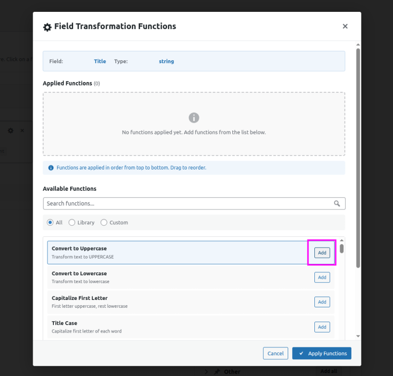
After selecting the functions, click Apply Functions to confirm. The field will then display an indicator showing that functions have been assigned.
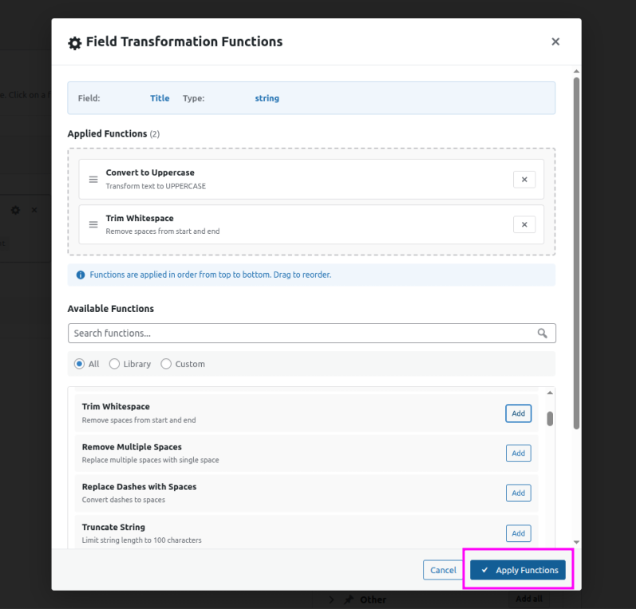
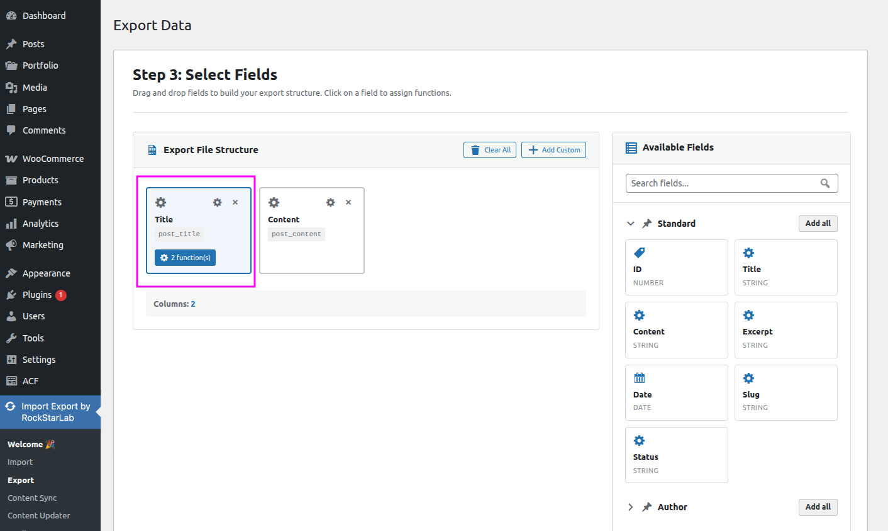
Learn more in the ⚙️ Functions Library documentation.
When all fields are configured, click Next Step to proceed.
Step 4 — Choose Export Format
Select the format in which you want to export your data:
- CSV — Compatible with Excel, Google Sheets, and other spreadsheet tools
- JSON — Suitable for developer workflows and API integrations
When CSV is selected, additional options are available to customize the delimiter character used to separate values in the file (e.g., comma, semicolon, tab). This is useful when your data contains commas or when the target application expects a specific separator.
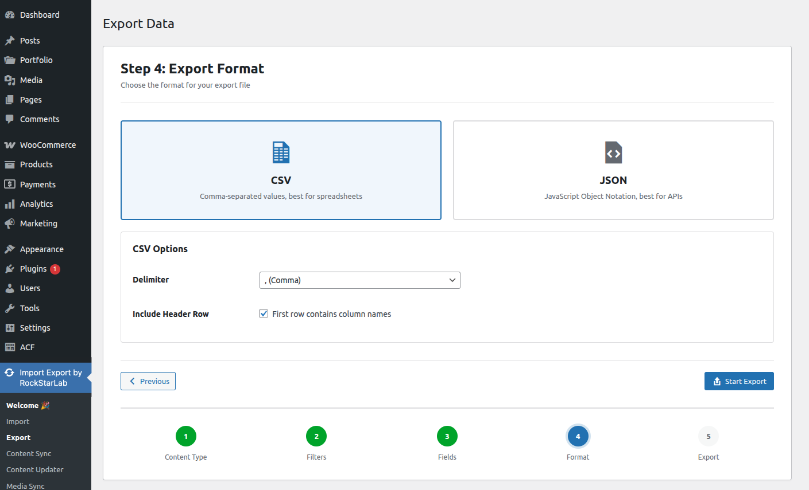
Once the format is configured, click Start Export to begin the export process.
The export will run in the background. Once completed, you will see a success message confirming that the export file has been generated — you can then download it directly from that screen.
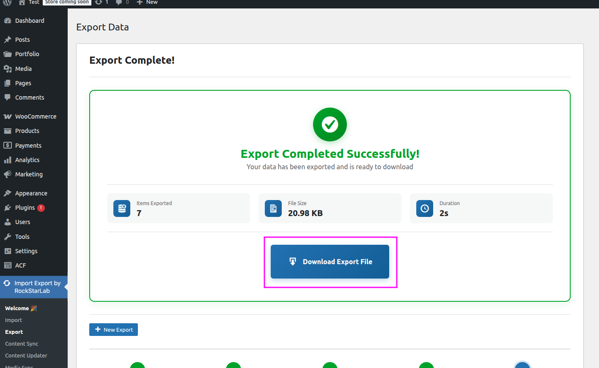